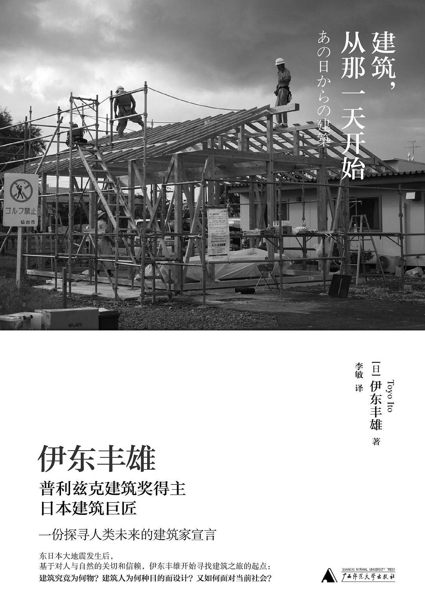

建筑，从那一天开始

In “Architecture After That Day,” Toyo Ito reflects on the purpose of his work as an architect. He questions what he has been designing buildings for and for whom, considering his journey from his birth in Korea and upbringing in Shinshu’s countryside to his pursuit of the modern and futuristic city of Tokyo. After fifty years of hard work, he begins to question if the large cities he helped create are simply the result of the manifestation of capital, and if the romance and idealism of architecture has been lost.
The 311 earthquakes were a turning point for Ito, leading him to return to a sense of humanity in his work. He believes that the true beauty of architecture should come from the architect’s concern for people and their well-being, rather than just the physical appearance of a building.
The duality of architecture as an industry - serving capital on one hand and society on the other - is a common struggle. Despite being a private investment, architecture necessarily impacts society through its use of land and resources, and its effect on the economy. This has led to the concept of “social design,” where design is used to solve real problems and make a positive impact on people and society.
Victor Papanek’s definition of social design as design for “real needs” encompasses a wider scope, including design thinking used to address challenges faced by individuals, society, and cities. This approach critiques the tendency for architecture to focus on unrealistic and distorted ideals, while also providing a genuine demand for reality in the design industry and transforming it into a powerful social force. Examples of social design in architecture include public housing and the educational process of design that spreads ideas and drives impact.